Cartes postales proposées par Thierry Meynier sur son facebook et site du SESA


 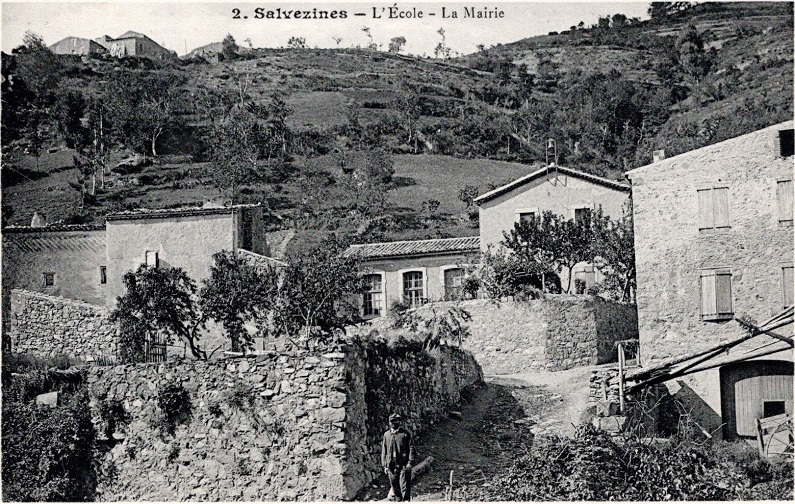
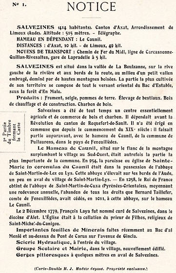
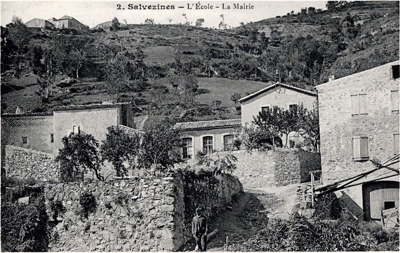
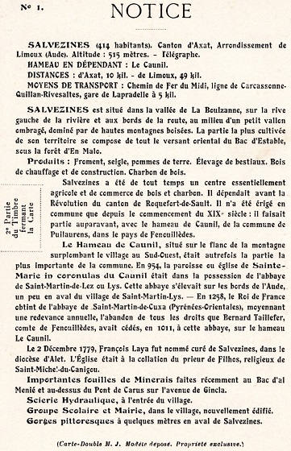


 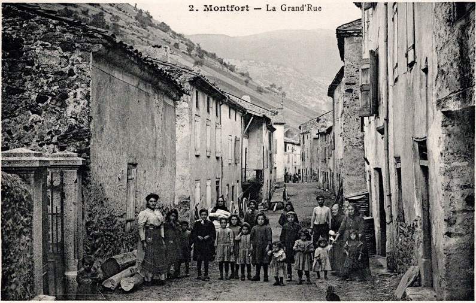
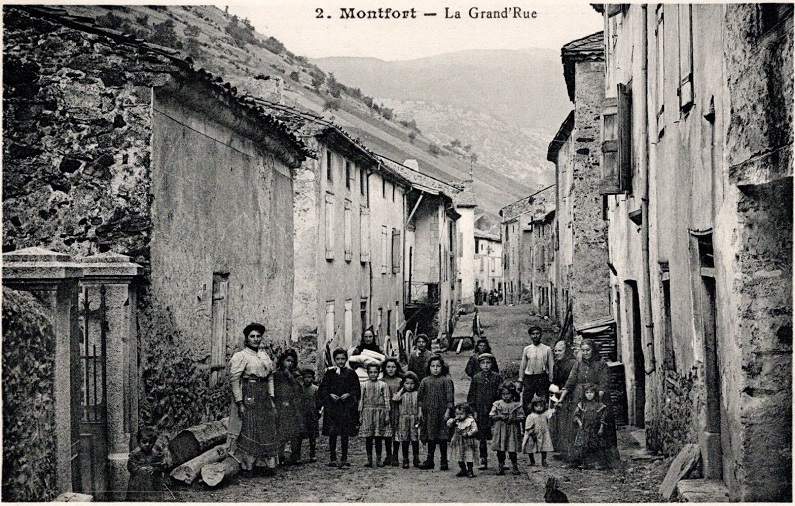

 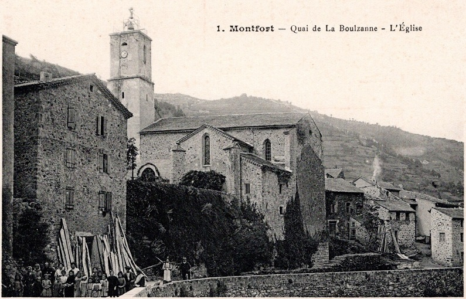
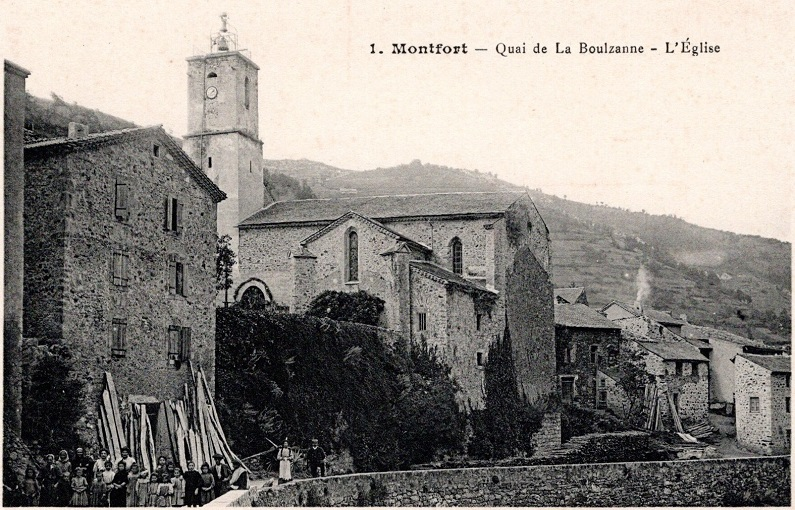
 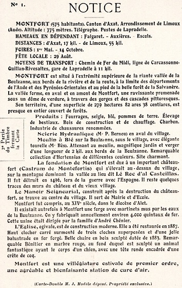
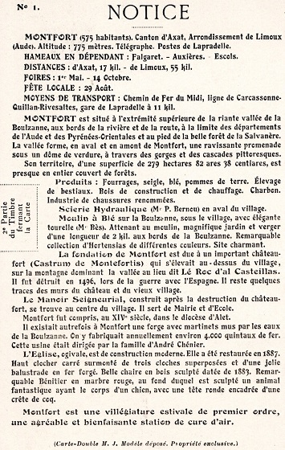
Montfort-sur-Boulzane - Vue générale du monument aux morts de la guerre de 1914-1918 depuis le nord. Auteur de l’œuvre représentée : Gourdon, U. (fabricant) ; 1er quart 20e siècle ; sculpture ; granite : taillé, métal : fondu
Vue des ruines depuis la route
Ensemble des ruines
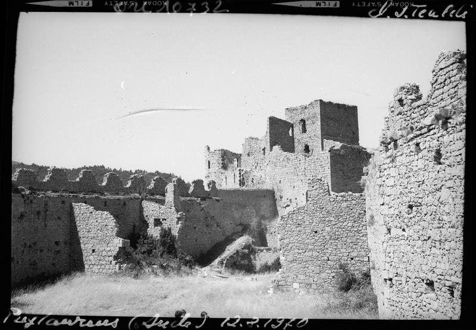Ensemble des ruines
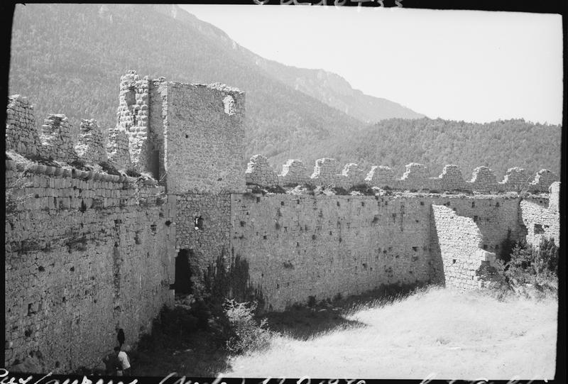Donjon et enceinte en ruines
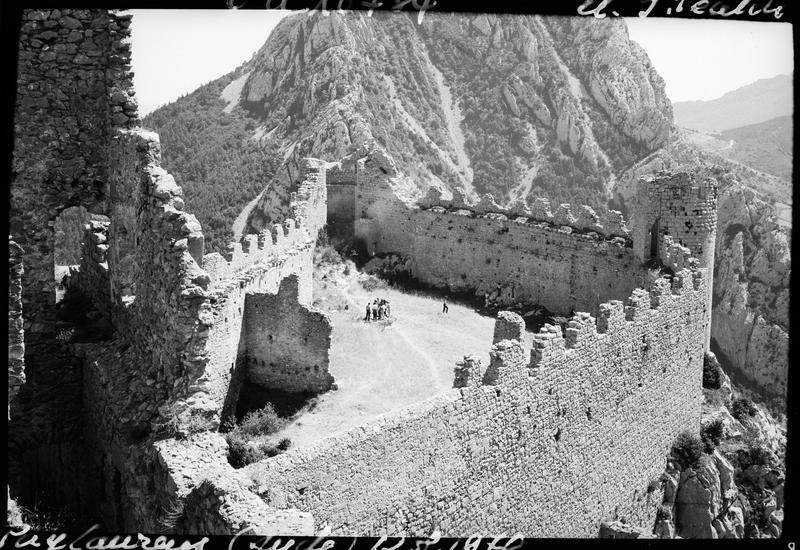Vue plongeante sur les fortifications
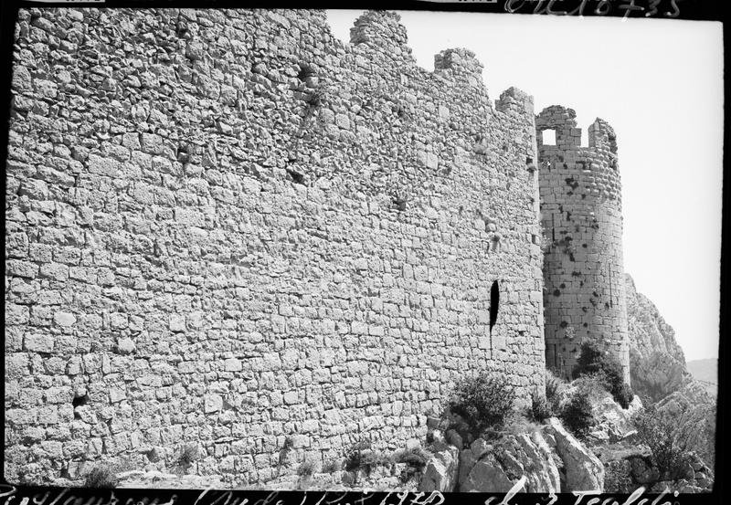Remparts en ruines
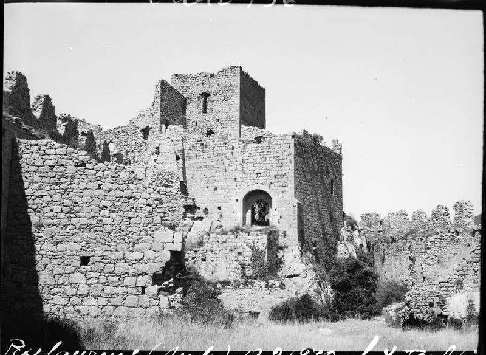Donjon et logis en ruines
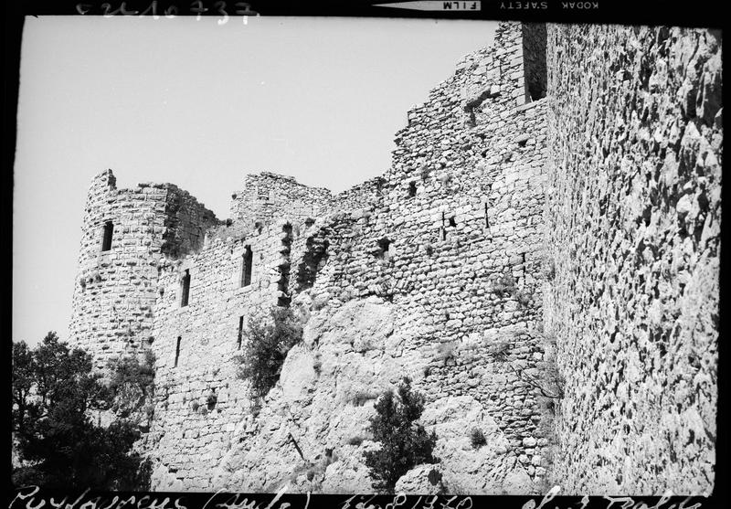Corps de logis en ruines
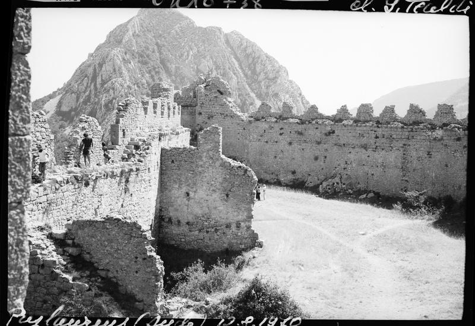Cour intérieure, remparts en ruines
Retable du maître-autel, vue générale
tabernacle du maître-autel, vue générale
Lambris de revêtement, détail
Lambris de revêtement, détail
Lambris de revêtement, détail
Lambris de revêtement, détail
chaire à prêcher, vue générale